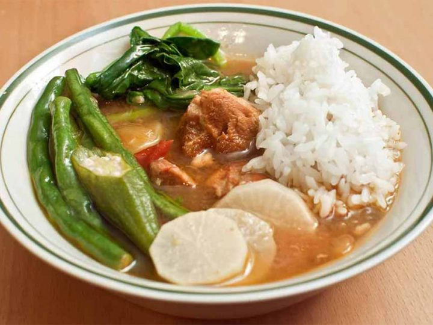

Sinigang Recipe

Description
Sinigang is a sour soup native to the Philippines. This recipe uses pork as the main ingredient. Other proteins and seafood can also be used. Beef, shrimp, fish are commonly used to cook sinigang.
Ingredients
- Pork Belly
- Tamarind
- Water Spinach
- String Beans
- Eggplant
- Daikon Radish
- Long green pepper
Extract The Flavors From The Tamarind
The old school method of cooking sinigang makes use for fresh young tamarind. This has to be boiled until enough sourness is extracted from it. In this recipe, I boiled the tamarind in 2 quarts of water for 40 minutes. It can be done for up to 1 hour for optimal results. Once the flavors are extracted from the fruit, the solid parts of the tamarind need to be removed. Do this by running the water into a kitchen sieve or a strainer. I recommend squeezing the tamarind afterwards. You will be surprised on how much flavors are left in the pulp.Boil The Tamarind Broth And Cook The Meat
Traditional sinigang is cooked plainly by boiling all the ingredients together. Start by pouring the tamarind broth (in step 1) into a cookware of your choice. Deep and wide pots are perfect for this. Boil the liquid and then add some onion and tomato. This will add flavor to the broth. This is also the proper time to add the pork belly. Make sure to cover your pot so that the liquid can boil quickly.Skim-off the floating scums, add a bit of fish sauce for flavor, and then cover and simmer until the pork becomes tender. This can take between 45 to 90 minutes depending on the quality of the meat.Add The Vegetables Sequentially
Not all vegetables cook at the same time. This is the reason why I am adding the sinigang veggies by batch. The first batch of veggies to add are daikon radish and eggplants. Some people also add their string beans at this point if they want it to be extra soft later on. I prefer mine to be a bit crisp. After 5 minutes of cooking in low heat (above simmering temp), add the long green peppers, string beans, remaining tomatoes, and okra and continue cooking for 3 minutes.Season It And Then Add The Remaining Ingredients
For this step, I added the stalks of the water spinach and seasoned the dish with fish sauce (patis) and ground black pepper (this ingredient is optional). Quickly cook it for around 2 minutes before adding the water spinach leaves. Cover and turn the heat off. You will basically be cooking the leaves using the residual heat inside the pot. Do this for 3 to 5 minutes. It should be enough for you to prepare the rice and side dishes on the dining table before announcing to everyone that dinner (or lunch) is served.
Home